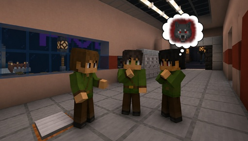
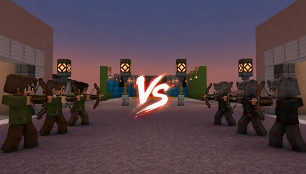

目次
遊び方
これは村の平和を守る村人と村を滅ぼそうとする人狼との戦い
マイクラ人狼PVPは、弓を使ってプレイヤー同士が戦う対戦ゲームです。
村人たちは人狼と戦えるように弓を持っています。その弓をつかって怪しい人を撃とう！
弓の攻撃は一撃で相手を倒すことができるが矢がないと攻撃できないので気を付けよう。
矢はマップ内の補充スポットから補充する必要があります。補充スポットは人が集まりやすいので気を付けよう。
※通話しながらのプレイを推奨します。
各陣営の勝利条件
プレイヤーは村人陣営と人狼陣営に分かれ、相手陣営の全滅を目指します。

勝利条件一覧
各陣営の勝利条件は以下の通りです。
| 村人陣営 | 人狼陣営の全滅 |
|---|---|
| 人狼陣営 | 村人陣営の全滅 |
プレイヤーは自分の陣営の勝利条件を達成することを目指しましょう

ゲームのルール
- プレイヤーを殴るのは問題ありませんが殴ってキルはしないようにしてください
- 死亡したら喋らないようにしてください
禁止行為
以下のことはやらないでください。
- プレイヤーを弓以外でキルする
- プレイヤーを不快にする行動
- チート行為
- ゲームの進行を妨げる行為
※禁止行為を行うとBANされる可能性があります
ゲームのおすすめ構成
ここではゲームの配役おすすめを紹介します！
人数ごとによるおすすめ人狼数
| 総人数 | 人狼 |
|---|---|
| 5人以下 | 1人 |
| 6~8人 | 2人 |
| 9人以上 | 3人 |
例
- 5人盤面 占い師１ 人狼１
- 7人盤面 占い師１ 人狼２ 狂人１
自分の好きなように配役するのもあり！
みんなで楽しもう！